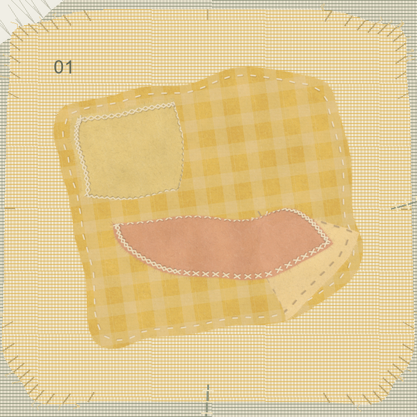
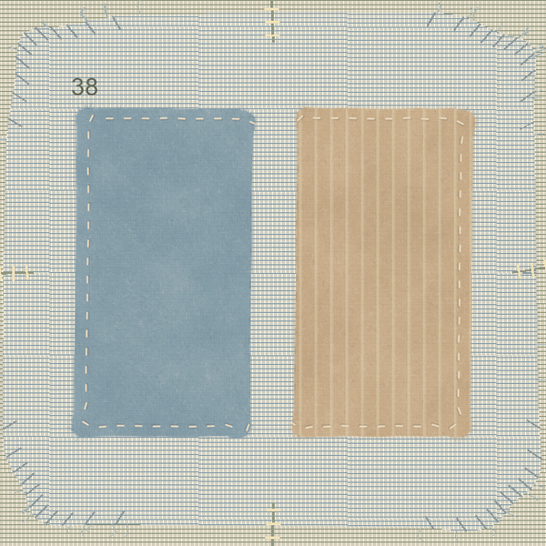
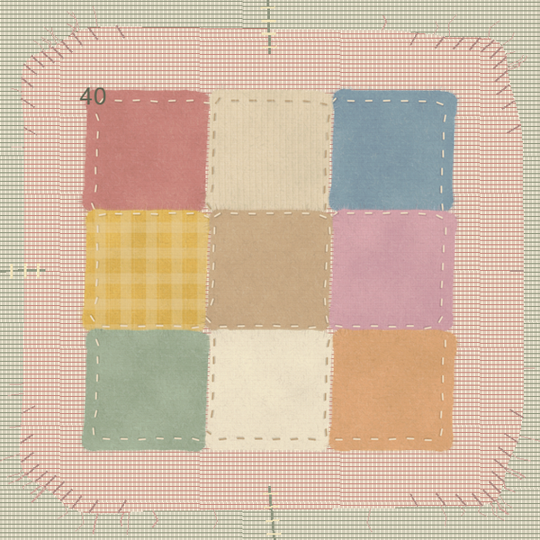
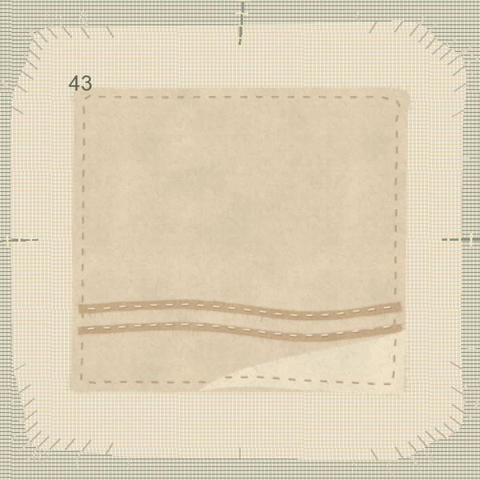

AN EXPLORATION OF LOVE, IN TEXTILES
Feeling Fabric
What does romantic love mean to you?
Think of a person, a relationship, or a moment that stays with you.
A collective work, still unfolding.
Fifty small ways of seeing love.
A place for your own.
Choose three words. Make one fabric.
Let your thread meet someone else’s.




A material archive of what we feel.
YOUR THREE THREADS
Which words
feel like your love?
Choose exactly three. You will weave them into one fabric.
Selected 0/3
ONE FABRIC · THREE FEELINGS
Cut. Layer. Stitch.
A LITTLE PIECE OF YOU
Three feelings.
One fabric.
Your pattern. Your stitches. A gift of love.
Local prototype · saved only in this browser.
THE COLLECTIVE FABRIC
Love, woven together.
One cloth, many stories. Drag to wander · Select a piece to follow its threads.
Browse words & fabrics as a list
About the data
Download mapped data ↓Download supplied CSV ↓A PERSONAL PATTERN, A HANDMADE GIFT
Stitch your love.
YOUR PERSONAL PATCH KITIllustrative kit preview